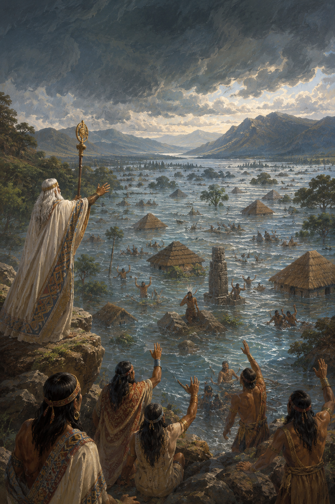
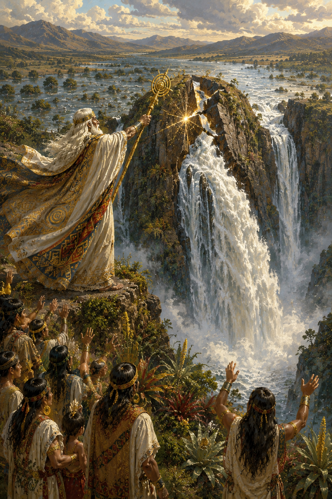
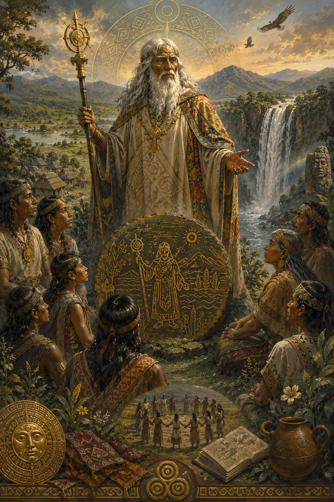
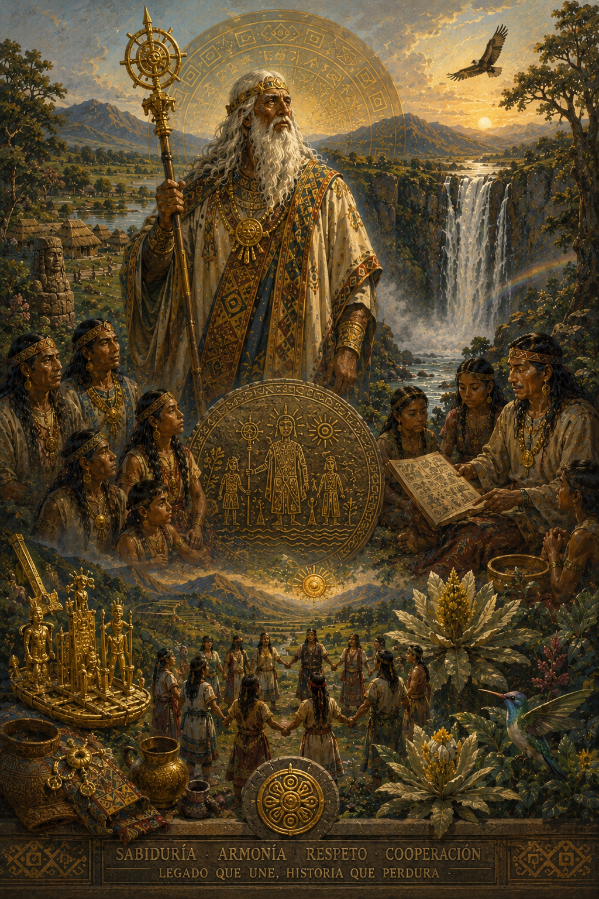
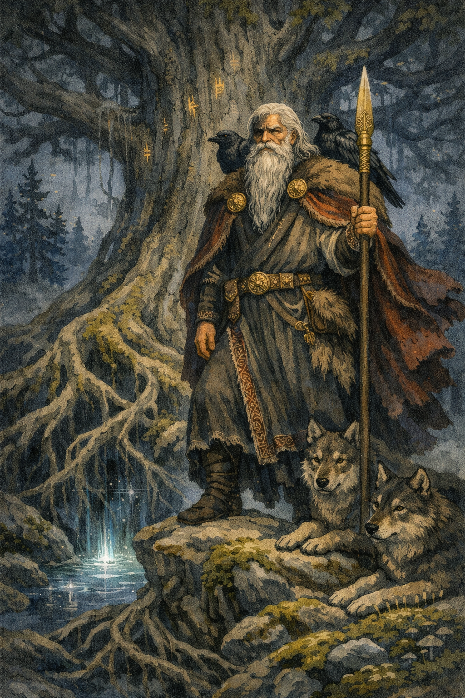
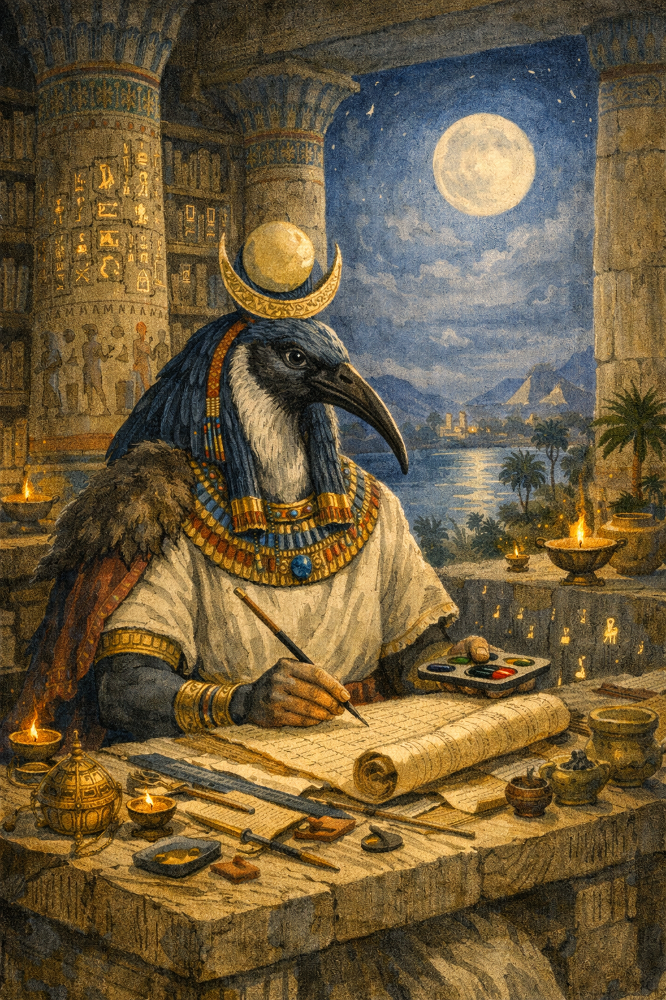

Prometeo
Titán de la mitología griega que entregó el fuego a la humanidad, simbolizando el conocimiento y el progreso.
Bochica es una de las figuras más importantes de la mitología muisca. Se le describe como un anciano de larga barba blanca que llegó desde tierras lejanas para enseñar conocimientos a los pueblos del altiplano cundiboyacense.
Según la tradición, transmitió normas de convivencia, agricultura, tejido y respeto por las leyes que permitieron el desarrollo de las comunidades muiscas.

Una de las historias más conocidas relata que los habitantes de la sabana fueron castigados con una enorme inundación provocada por fuerzas sobrenaturales que cubrieron gran parte del territorio.
Los muiscas, desesperados, acudieron a Bochica para pedir ayuda y protección frente al desastre que amenazaba con destruir sus poblados.

Para salvar a su pueblo, Bochica golpeó las montañas con su báculo sagrado y abrió una gran grieta por donde las aguas pudieron escapar.
De acuerdo con la leyenda, este acontecimiento dio origen al actual Salto del Tequendama, una de las cascadas más emblemáticas de Colombia y símbolo del poder del héroe civilizador.

Después de cumplir su misión, Bochica continuó siendo recordado como un guía espiritual y un protector del conocimiento. Sus enseñanzas fueron transmitidas de generación en generación.
En la actualidad, la figura de Bochica representa la sabiduría, la justicia y la capacidad de los pueblos para superar las adversidades mediante la cooperación y el respeto por la naturaleza.

Bochica pertenece a la tradición cultural de los muiscas, pueblo indígena que habitó el Altiplano Cundiboyacense en el centro de Colombia. Su figura está especialmente vinculada a los territorios que hoy forman parte de los departamentos de Cundinamarca y Boyacá.
En esta región se desarrollaron algunas de las leyendas más importantes sobre Bochica, incluyendo el relato de la creación del Salto del Tequendama. Su historia refleja la profunda conexión entre los muiscas, la naturaleza y los conocimientos que permitieron el desarrollo de su sociedad.


Bochica es considerado uno de los personajes más importantes de la mitología muisca debido a su papel como maestro, legislador y guía espiritual. Sus enseñanzas simbolizan el valor del conocimiento, la organización social y la convivencia dentro de las comunidades.
Su historia también representa la relación armoniosa entre los seres humanos y la naturaleza. A través de relatos como la creación del Salto del Tequendama, los muiscas explicaban fenómenos del entorno y transmitían lecciones sobre respeto, responsabilidad y cooperación.
En la actualidad, Bochica continúa siendo un símbolo del patrimonio cultural colombiano y una muestra de la riqueza de las tradiciones indígenas que forman parte de la identidad histórica del país.
Titán de la mitología griega que entregó el fuego a la humanidad, simbolizando el conocimiento y el progreso.

Dios principal de la mitología nórdica, asociado con la sabiduría, el conocimiento y la búsqueda de la verdad.

Dios egipcio de la escritura, la sabiduría y el conocimiento, guardián del orden y la inteligencia.